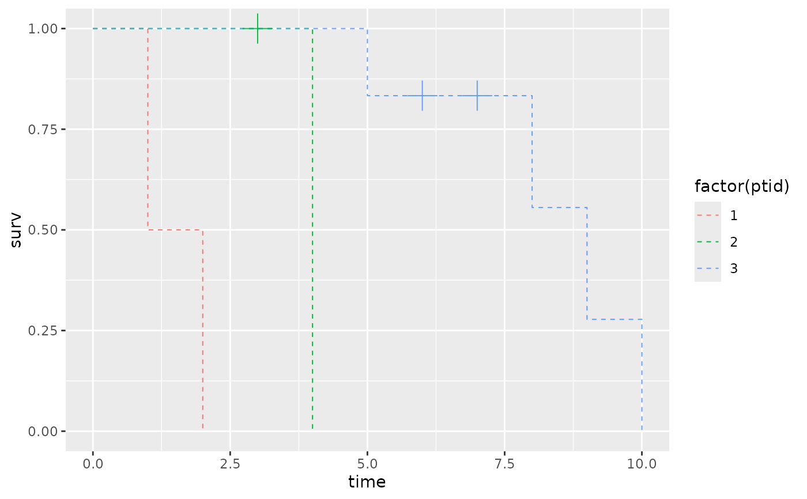
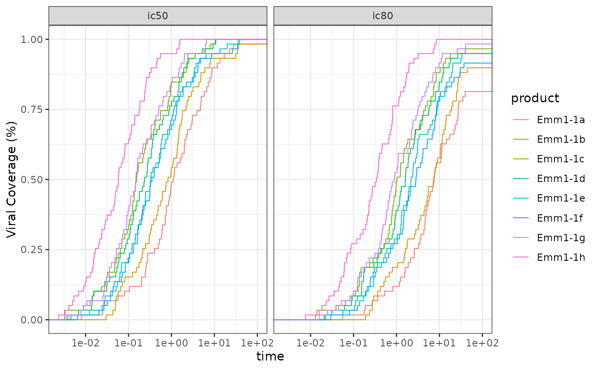

Create a data.frame to plot step lines
create_step_curve.RdCreates survival probabilities from time and censoring information and generates a risk table that includes the survival probabilities and number at risk in addition to the data provided. This data.frame can be used to plot step line outcomes such as time-to-event (Kaplan-Meier curves) and magnitude breadth (MB) curves.
Arguments
- x
Time values used to create the x-axis in step curves (numeric vector)
- event
event status, 0=censor and 1=event (numeric vector). If NULL assumes no censoring
- flip_surv
logical indicating if reverse survival estimates should be calculated. Default is FALSE.
- flip_top_x
value to set x for top point for plotting. Only used if
flip_surv = TRUE. Default isInf.
Value
Returns a data frame with time, surv, n.risk, n.event, and
n.censor (survival::summary.survfit output format).
If flip_surv = TRUE also includes surv.flipped column.
Details
The output of survival probabilities can be used for plotting step
function curves, with time on the x axis, surv on the y axis, and
n.censor == 1 subset can be used for a ggplot2::geom_point() layer.
If flip_surv = TRUE there is an additional row at the bottom of the
data.frame needed for horizontal line at the top of the plot
Examples
create_step_curve(x = 1:10)
#> time surv n.risk n.event n.censor
#> 1 0 1.0 10 NA NA
#> 2 1 0.9 10 1 0
#> 3 2 0.8 9 1 0
#> 4 3 0.7 8 1 0
#> 5 4 0.6 7 1 0
#> 6 5 0.5 6 1 0
#> 7 6 0.4 5 1 0
#> 8 7 0.3 4 1 0
#> 9 8 0.2 3 1 0
#> 10 9 0.1 2 1 0
#> 11 10 0.0 1 1 0
create_step_curve(x = 1:10, event = rep(0:1, 5))
#> time surv n.risk n.event n.censor
#> 1 0 1.0000000 10 NA NA
#> 2 1 1.0000000 10 0 1
#> 3 2 0.8888889 9 1 0
#> 4 3 0.8888889 8 0 1
#> 5 4 0.7619048 7 1 0
#> 6 5 0.7619048 6 0 1
#> 7 6 0.6095238 5 1 0
#> 8 7 0.6095238 4 0 1
#> 9 8 0.4063492 3 1 0
#> 10 9 0.4063492 2 0 1
#> 11 10 0.0000000 1 1 0
library(dplyr)
dat = data.frame(x = c(1:10),
event = c(1,1,0,1,1,0,0,1,1,1),
ptid = c(1,1,2,2,3,3,3,3,3,3))
plot_data <-
dat |>
dplyr::group_by(ptid) |>
dplyr::group_modify(~ create_step_curve(x = .x$x, event = .x$event))
ggplot2::ggplot(data = plot_data,
ggplot2::aes(x = time, y = surv, color = factor(ptid))) +
ggplot2::geom_step(linetype = "dashed", direction = 'hv', lwd = .35) +
ggplot2::geom_point(data = plot_data |> filter(n.censor == 1),
shape = 3, size = 6, show.legend = FALSE)

#mAB example for reverse curves
data(CAVD812_mAB)
plot_data <-
CAVD812_mAB |>
filter(virus != 'SVA-MLV') |>
tidyr::pivot_longer(cols = c(ic50, ic80)) |>
dplyr::group_by(name, product) |>
dplyr::group_modify(~ create_step_curve(x = pmin(.x$value, 100),
event = as.numeric(.x$value < 50),
flip_surv = TRUE,
flip_top_x = 100))
ggplot2::ggplot(data = plot_data,
ggplot2::aes(x = time, y = surv.flipped, color = product)) +
ggplot2::geom_step(direction = 'hv', lwd = .35) +
ggplot2::scale_x_log10() +
ggplot2::scale_y_continuous('Viral Coverage (%)') +
ggplot2::facet_grid(. ~ name) +
ggplot2::theme_bw()
#> Warning: log-10 transformation introduced infinite values.
